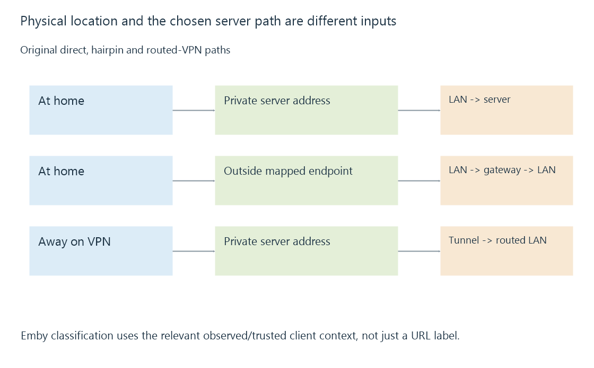

Local and remote connections to Emby
Local and remote connections describe the path and client-address context used to reach Emby, which can differ from a device’s physical location or the hostname it uses.
A phone sitting beside the server can use a public-looking hostname. A phone outside the home can reach a private server address through a VPN.
Physical location, the destination URL and the client address observed by Emby are different pieces of information.
Compare the actual paths
Consider these original cases:
| Client’s situation | Chosen destination | Path |
|---|---|---|
| On the server LAN | 192.168.50.20 | Direct local path |
| On the same LAN | A hostname resolving to the gateway’s outside endpoint | Possible NAT loopback path |
| Away, connected through a VPN | 192.168.50.20 | Routed tunnel into the server network |
The second case needs the router’s supported return-to-inside behavior. The third needs tunnel routes and an allowed return path.

A private destination written into a remote phone’s app does not become reachable until its network has a route to that private realm.
Emby also classifies client addresses
Emby’s network settings include LAN Networks, used when applying local/remote bandwidth and access controls.
That classification is an application decision based on the relevant client-address context. Declaring a prefix local does not install an operating-system route, extend Wi-Fi or create a port mapping.
If a VPN client has address 10.8.0.6, the administrator may intend it to count as local under a particular access policy. The VPN can be fully routed while that classification still needs to match the intended policy.
Conversely, marking a very broad range local can change how genuinely external clients are treated. The prefix should represent the actual intended address realm.
Translation can change what the server observes
A tunnel can preserve a VPN client’s source address, or a gateway can translate it. A reverse proxy makes its own upstream connection to Emby.
Suppose an original proxy at 192.168.50.10 forwards a request from an outside client. The origin’s socket peer is the proxy. Additional trusted metadata can describe the earlier client, but it needs the correct trust interpretation.
Forwarded client addresses develops that distinction. Seeing a private socket address does not by itself establish that the original viewer was on the home LAN.
A hostname can select another path at home
With split DNS, one hostname can resolve to a local destination at home and an external destination elsewhere. With another configuration, the same outside address may be used from both locations.
Those are different connection paths even though the URL text matches. They can also have different ports, encryption endpoints and intermediaries.
See Also
- Split DNS and location-dependent server endpoints
- NAT loopback and same-network public endpoints
- VPN access and the routed path to a media server
- Forwarded client addresses and trusted proxy context